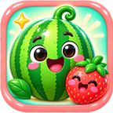
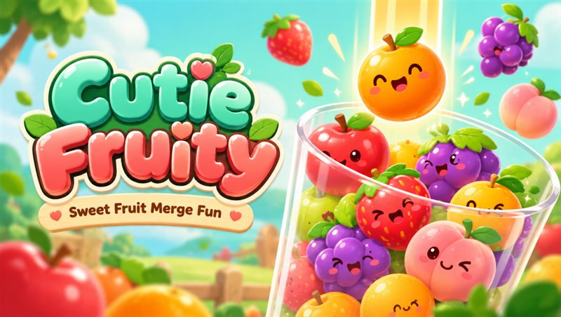

Милые фруктикиCutie Fruity
Роняйте фрукты в стакан: два одинаковых соединяются в один более крупный. Собирайте очки, открывайте персонажей и новые миры.

Соединяйте фрукты и открывайте миры
Проведите пальцем влево или вправо и отпустите, чтобы сбросить фрукт. Столкновение двух одинаковых фруктов создаёт более крупный. Старайтесь получить арбуз и не заполнить стакан.
Соединение фруктов
Планируйте, куда упадёт следующий фрукт, чтобы получить больше очков.
Коллекции
За суммарные очки открываются карточки и новые оформления персонажей.
Помощники
Молоток и совочек помогут освободить место, когда стакан заполнится.
Поддержка и конфиденциальность
Политика конфиденциальности
Сведения о локальном прогрессе, рекламе и обработке данных.
Открыть политикуAbout Cutie Fruity
Drop cute fruits into the container. When two matching fruits meet, they merge into a bigger one. Earn points, collect character cards and unlock new visual worlds.
Support: n.choi.sw@gmail.com · Privacy Policy